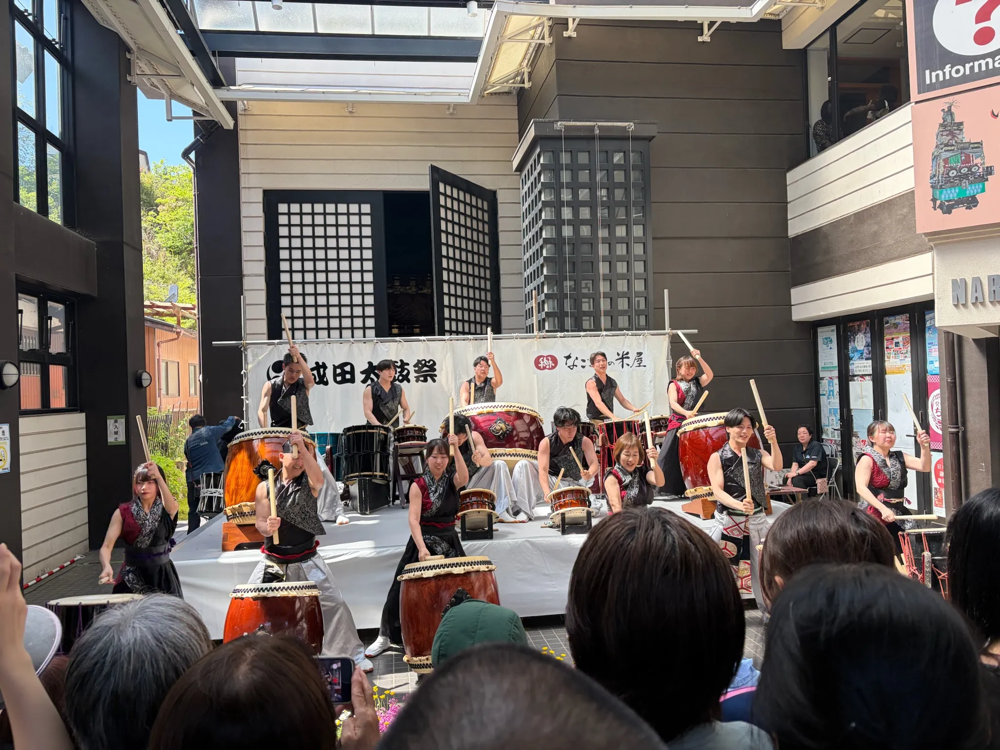
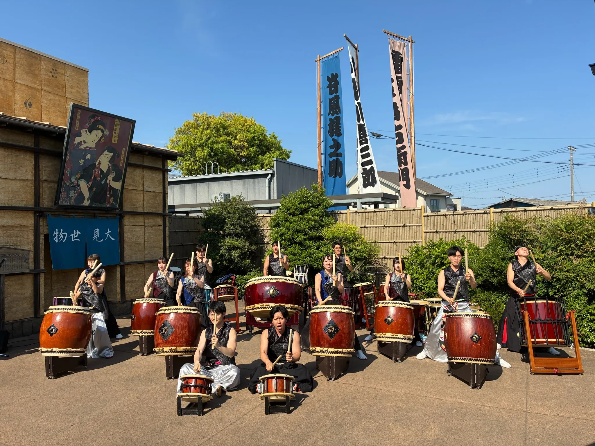

Profile
Ono
Web Code / Design
お客様の想いやサービスの魅力が、見た人にきちんと伝わる作品制作を大切にしています。 レイアウト・タイポグラフィ・余白のバランスを意識しながら、使いやすく美しいWebサイトづくりに取り組んでいます。
今後も、伝わるデザインと丁寧な実装を通じて、価値のある制作をしていきたいです。
HTML
オリジナルのWebサイトを制作しています。
デザインカンプからのコーディング、レスポンシブ対応が可能です。
CSS
オリジナルのWebサイトを制作しています。
デザインカンプからのコーディング、レスポンシブ対応が可能です。
JavaScript
ハンバーガーメニュー、スライダーなど、基本的な動的パーツの実装が可能です。
jQuery
ハンバーガーメニュー、スライダーなど、基本的な動的パーツの実装が可能です。
Skills
Photoshop
写真の色調補正、不要物の除去、トーンカーブやマスクを使った合成処理が可能です。
Illustrator
パーツ作成・バナー制作が可能です。
Figma
AutoLayoutを使用したワイヤーフレーム、デザインカンプ制作が可能です。
Canva
プレゼン資料・SNS用画像制作が可能です。
Like


趣味は、和太鼓です。幼少期に習い、中学２・３年生の時は和太鼓部に所属していました。
約1年ほど前から現在の和太鼓グループに所属しています。